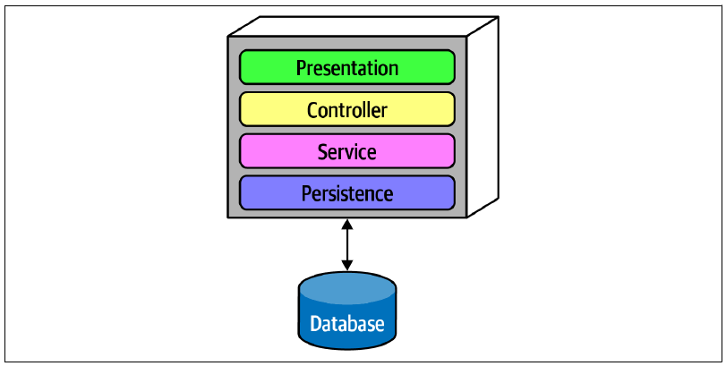
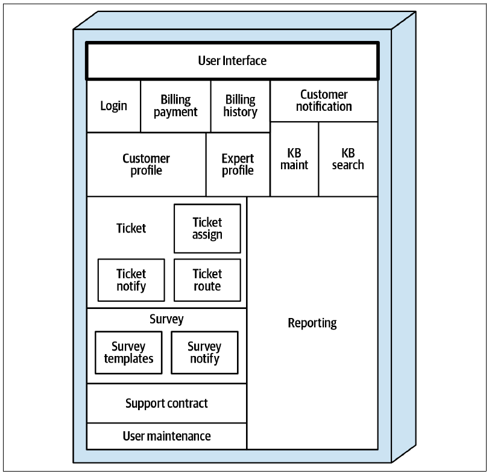
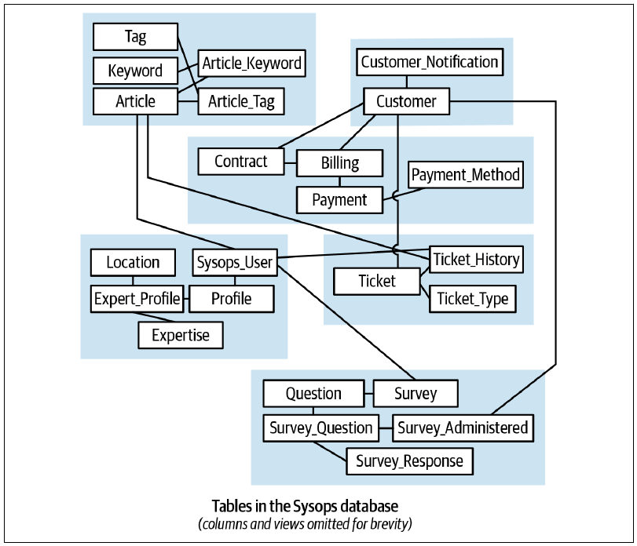

1 没有“最佳实践”时会发生什么？
为什么软件架构师这样的技术人员会在会议上演讲，或者写一本书？因为他们发现了俗称“最佳实践”的东西。这个词已经被滥用到一种程度，以至于说出它的人越来越容易遭到反感。不论用什么称呼，当技术人员找到某个普遍问题的新颖解法，并希望让更多人知道时，他们就会写书。
然而，那一大类根本没有良好解法的问题又该怎么办？软件架构中存在许多成类的问题，它们没有普遍适用的好答案，摆在面前的只是一组杂乱的权衡，与另一组（几乎）同样杂乱的权衡彼此对立。
软件开发人员很擅长上网搜索当前问题的答案。例如，当他们需要弄清楚如何在自己的环境中配置某个工具时，熟练使用 Google 通常就能找到答案。
但架构师并非如此。
架构师面对的许多问题之所以独特，是因为它们揉合了组织自身精确的环境和具体情形。某个人恰好遇到完全相同的场景，还把它写进博客或贴到 Stack Overflow 上的概率能有多大？
架构师或许曾经疑惑：与框架、API 等技术主题相比，为什么架构类图书这么少？架构师很少遇到共通的问题，却必须不断在新情形下艰难决策。对架构师而言，每个问题都像一片独一无二的雪花。很多时候，问题不只对某个组织而言是新的，在全世界范围内也是新的。这样的难题没有现成的书，也没有现成的会议演讲可以参考。
架构师不应不停寻找能解决问题的“银弹”。银弹如今仍和 1986 年 Fred Brooks 创造这个说法时一样罕见：
无论在技术还是管理方法上，都不存在某一项单独的发展，能够保证在十年内让生产率、可靠性或简洁性提高一个数量级（十倍）。
—Fred Brooks，《没有银弹》
几乎每个问题都会带来新的挑战，因此架构师真正的工作，是客观识别和评估一项重大决策两侧的全部权衡，并尽可能妥善地解决问题。本书和现实工作中都不谈“最佳方案”，因为“最佳”意味着架构师已经把设计中所有相互竞争的因素同时最大化。我们半开玩笑地给出这样的建议：
不要试图在软件架构中寻找最佳设计；应当努力寻找权衡组合中最不坏的那一种。
架构师所能创造的最佳设计，往往就是一组“最不坏”的权衡：没有任何单项架构特征能像单独优化时那样出众，但所有相互竞争的架构特征取得平衡，才会推动项目成功。
这就引出了一个问题：“架构师如何找到最不坏的权衡组合，并有效地记录下来？”本书主要讨论决策，帮助架构师在面对新情形时作出更好的决定。
1.1 为什么叫“难点”？
为什么我们把本书命名为《软件架构：难点》？标题中的“难”其实有双重含义。
第一，它表示困难。架构师不断面对一些从字面上和比喻意义上都前所未有的难题：其中包含许多会产生长期影响的技术决策，而这些决策又叠加在人际关系和组织政治环境之上。
第二，它表示坚硬、稳固。正如硬件与软件的区分，坚硬的部分变化得应当少得多，因为它为柔软的部分提供基础。与此类似，架构师也会区分架构与设计：前者关乎结构，后者更容易改变。因此，本书讨论的是架构中具有基础性的部分。
“软件架构”的定义本身，已经让从业者耗费了无数小时做毫无成果的争论。一个颇受欢迎的戏谑定义是：“软件架构，就是那些以后很难改变的东西。”这些“东西”，正是本书要讨论的内容。
1.2 给出经得起时间考验的软件架构建议
软件开发生态系统一直在混乱地变化和扩张。几年前还炙手可热的主题，要么已经被生态系统吸收而消失，要么被不同或更好的事物取代。
例如，十年前，大型企业占主导地位的架构风格是由编排驱动的面向服务架构。如今几乎没有人再采用这种风格（原因会在后文逐步揭示）；当前许多分布式系统青睐的是微服务。这样的转变为何发生，又是如何发生的？
架构师考察一种特定风格——尤其是历史上的风格——时，必须考虑当时有哪些约束，使它成为主流。当时许多公司正在通过合并发展成大型企业，同时承受转型带来的各种集成难题。此外，对大公司而言，开源软件不是可行选项，原因往往更多在政治而非技术。因此，架构师把共享资源和集中式编排作为解决方案的重点。
然而，此后开源软件和 Linux 逐渐成为可行替代方案，让操作系统在商业意义上变得免费。真正的转折点，则是 Puppet、Chef 等工具出现之后，Linux 在运维意义上也变得“免费”：开发团队可以把环境的创建写成程序，作为自动化构建的一部分。有了这种能力，微服务引发了一场架构革命，容器以及 Kubernetes 等编排工具的基础设施也迅速兴起。
这说明软件开发生态系统会以完全出人意料的方式扩张和演化。一项新能力带来另一项能力，后者又意外创造更多能力。随着时间推移，生态系统逐件替换自身，最后焕然一新。
这给一般技术图书、尤其是软件架构图书的作者带来一个古老难题：怎样才能写出一本不会立刻过时的书？
本书不把重点放在具体技术或其他实现细节上，而是关注架构师如何决策，以及在面对新情形时如何客观衡量权衡。我们使用当下的场景和例子提供细节与语境，但其底层原则始终是：遇到新问题时如何做权衡分析与决策。
1.3 数据在架构中的重要性
数据十分珍贵，而且会比系统本身存在得更久。
—Tim Berners-Lee
对许多架构从业者来说，数据就是一切。任何构建系统的企业都必须处理数据；数据往往比系统或架构存在得更久，因此需要审慎思考和设计。然而，数据架构师构建紧耦合系统的许多本能，会与现代分布式架构发生冲突。例如，架构师和数据库管理员必须确保业务数据能在单体系统拆分过程中幸存下来，并确保无论架构如何变化，企业仍能从数据中获得价值。
人们常说，数据是公司最重要的资产。企业希望从已有数据中提取价值，并不断寻找让数据参与决策的新方式。企业的每个部分如今都由数据驱动：服务现有客户、获取新客户、提高客户留存、改进产品、预测销售以及发现其他趋势。对数据的这种依赖意味着，一切软件架构都服务于数据，确保企业各个部分都能获得并使用正确的数据。
分布式系统刚流行的几十年前，本书作者构建过许多这样的系统。但现代微服务中的决策似乎更加困难，我们想弄清原因。最终我们意识到，在分布式架构早期，大多数数据仍然保存在一个关系数据库中。到了微服务时代，人们遵循领域驱动设计中的限界上下文理念，以限制实现细节耦合的范围，数据和事务性也随之上升为架构问题。现代架构的许多难点，都源于数据问题与架构问题之间的张力。第一部分和第二部分会分别拆解这些张力。
本书多个章节都会涉及一项重要区分：操作型数据与分析型数据的分离。
- 操作型数据
-
用于企业日常运营的数据，包括销售数据、交易数据、库存等。公司依靠这些数据运转；一旦它们中断，组织很快就会无法正常工作。这类数据属于在线事务处理（Online Transactional Processing，OLTP）数据，通常涉及在数据库中插入、更新和删除数据。
- 分析型数据
-
数据科学家和其他业务分析人员用于预测、趋势分析以及其他商业智能用途的数据。这类数据通常不具备事务性，而且往往不是关系型的；它可能位于图数据库中，也可能是格式不同于原始事务形式的快照。它对日常运营并不关键，却影响企业长期的战略方向与决策。
全书都会讨论这两类数据所产生的影响。
1.4 架构决策记录
记录架构决策最有效的方式之一，是使用架构决策记录（Architectural Decision Record，ADR）。Michael Nygard 最先在一篇博客文章中大力推广 ADR，Thoughtworks 技术雷达后来将其标记为“采用”。一份 ADR 是一个简短的文本文件，通常只有一到两页，用来描述一项具体的架构决策。ADR 可以采用纯文本，但通常使用 AsciiDoc、Markdown 等文本文档格式，也可以使用 Wiki 页面模板。我们在前一本书《软件架构基础》中用了一整章介绍 ADR。
本书会用 ADR 记录贯穿全书的各种架构决策。假定每项 ADR 均获批准，我们采用以下格式：
1.4.1 ADR：包含架构决策的简短名词短语
1.4.1.1 背景
用一到两句话简要说明问题，并列出可选解决方案。
1.4.1.2 决策
陈述架构决策，并详细说明作出该决策的理由。
1.4.1.3 后果
说明决策实施后的后果，并讨论决策过程中考虑的权衡。
本书创建的全部架构决策记录见附录 B。
对架构师而言，记录决策很重要；治理决策能否被正确采用，则是另一个问题。幸运的是，现代工程实践可以借助架构适应度函数，自动完成许多常见的治理工作。
1.5 架构适应度函数
架构师识别出组件之间的关系并把它们固化到设计之后，如何保证实施人员遵循这项设计？更广泛地说，如果架构师并不亲自实施，又该如何确保自己定义的设计原则成为现实？
这些问题属于架构治理，即对软件开发一个或多个方面进行有组织的监督。本书主要讨论架构结构，因此会在多处介绍如何用适应度函数自动落实设计原则和质量原则。
软件开发经过缓慢演化，逐渐形成了独特的工程实践。早期的软件开发经常套用制造业隐喻，大到瀑布式开发流程，小到项目的集成方式皆是如此。20 世纪 90 年代初，Kent Beck 和 C3 项目的其他工程师重新思考软件开发工程实践，提出极限编程（eXtreme Programming，XP），证明增量反馈与自动化是提高软件开发生产率的关键。21 世纪初，同样的经验被用在软件开发与运维的交汇处，催生了 DevOps 这一新角色，并把许多原先手工执行的运维杂务自动化。与此前一样，自动化让团队能放心提速，因为良好的反馈机制可以及时发现破坏。因此，自动化和反馈已经成为高效软件开发的核心信条。
想想那些促成自动化突破的环境与情形。在持续集成出现之前，大多数软件项目都有漫长的集成阶段。每位开发人员要先在一定程度上独立工作，最后再把全部代码合入集成阶段。强迫开发者建立分支、妨碍持续集成的版本控制工具中，至今仍残留着这种实践的痕迹。不出所料，项目规模越大，集成阶段就越痛苦，两者高度相关。XP 团队开创持续集成，展示了快速、持续反馈的价值。
DevOps 革命走过了相似的道路。Linux 和其他开源软件对企业而言变得“足够好”，再加上可以用程序定义机器（最终是虚拟机）的工具出现，运维人员意识到，他们可以把机器定义以及许多重复工作自动化。
在这两个案例中，技术与认知的进步，使原本由昂贵角色负责的重复工作实现了自动化——这恰好描述了大多数组织中架构治理的现状。例如，架构师选择了某种架构风格或通信媒介之后，怎样确保开发人员正确实现？手工治理时，架构师会审查代码，或召开架构评审委员会来评估治理状况。然而，就像手工配置运维机器一样，肤浅的审查很容易遗漏重要细节。
1.5.1 使用适应度函数
在 2017 年出版的《演进式架构》（Building Evolutionary Architectures，O’Reilly）中，Neal Ford、Rebecca Parsons 和 Patrick Kua 将架构适应度函数定义为：对某项架构特征或一组架构特征进行客观完整性评估的任何机制。下面逐项拆解这一定义。
- 任何机制
-
架构师可以使用多种工具实现适应度函数，本书会给出许多例子。例如，专用测试库可以测试架构结构；监控工具可以测试性能、可伸缩性等运行期架构特征；混沌工程框架则可以测试可靠性和韧性。
- 客观完整性评估
-
自动化治理的一项关键条件，是客观定义架构特征。架构师不能只说希望网站“性能很高”；他们必须给出能被测试、监控或其他适应度函数测量的客观数值。
-
架构师还必须警惕复合架构特征。这类特征本身无法客观测量，实际上是其他可测量事物的组合。例如，“敏捷性”无法直接测量；但拆解这个宽泛术语后，其目标其实是让团队能够快速而有信心地响应生态系统或领域中的变化。于是，架构师就能找到对敏捷性有贡献的可测特征：可部署性、可测试性、周期时间等。架构特征无法测量，往往说明定义过于模糊。追求可测量属性，才能让适应度函数的应用自动化。
- 某项架构特征或一组架构特征
-
这句话描述了适应度函数的两种作用范围：
-
原子型。 此类适应度函数单独处理一项架构特征。例如，检查代码库中是否存在组件环的适应度函数，其范围就是原子型的。
-
整体型。 此类适应度函数验证一组架构特征。架构特征有时会与其他特征产生协同作用，使问题更加复杂。例如，架构师想提高安全性时，很可能会影响性能；可伸缩性与弹性有时也相互冲突——支持大量并发用户，可能让系统更难应对突发流量。整体型适应度函数会同时检验彼此关联的一组架构特征，确保组合后的效果不会对架构产生负面影响。
架构师实现适应度函数，是为了保护架构特征免受意外变化。在敏捷软件开发中，开发人员通过单元测试、功能测试和用户验收测试来验证领域设计的不同维度；但直到最近，都没有相应机制验证设计中的架构特征。事实上，适应度函数与单元测试之间的分界，可以为架构师提供很好的范围判断方法：适应度函数验证架构特征，而不是领域准则；单元测试恰好相反。要判断需要适应度函数还是单元测试，架构师可以问：“执行这个测试是否需要领域知识？”如果答案是“是”，应使用单元测试、功能测试或用户验收测试；如果答案是“否”，则需要适应度函数。
例如，架构师所说的弹性，是应用承受用户量突然激增的能力。架构师不需要知道任何领域细节——它可能是电商网站、在线游戏或其他系统。因此，弹性是架构问题，属于适应度函数的范围。另一方面，如果架构师想验证邮寄地址是否包含正确的组成部分，就应使用传统测试。当然，两者并非纯粹的二元划分：有些适应度函数会涉及领域，反之亦然；但目标上的差异提供了一种很好的心智分界。
下面用几个例子让这个概念更具体。
架构师的一个常见目标，是让代码库保持良好的内部结构完整性。然而，在许多平台上，某些“恶意力量”会与架构师的良好意图作对。例如，在任何流行的 Java 或 .NET 开发环境中编写代码时，只要开发人员引用了尚未导入的类，IDE 就会贴心地弹出对话框，询问是否自动导入。这样的事情发生得太频繁，多数程序员已经养成条件反射般点掉自动导入提示的习惯。
然而，在类或组件之间随意导入，会给模块化带来灾难。图 图 1.1 展示了架构师竭力避免的一种破坏性反模式。
在这种反模式中，每个组件都引用另外两个组件中的内容。这样的组件网络会破坏模块化，因为开发人员无法在不带上其他组件的情况下复用其中任何一个。当然，如果其他组件还与更多组件耦合，架构就会越来越接近“大泥球”反模式。架构师怎样才能治理这种行为，而不必时刻站在那些“手快”开发人员身后监督？代码审查有所帮助，但它在开发周期中发生得太晚，难以真正奏效。如果架构师允许开发团队在一周内肆意跨越代码库导入，直到代码审查才处理，代码库早已遭到严重破坏。
解决方法是编写一个避免组件成环的适应度函数，如示例 1-1 所示。
示例 1-1：检测组件环的适应度函数
public class CycleTest {
private JDepend jdepend;
@BeforeEach
void init() {
jdepend = new JDepend();
jdepend.addDirectory("/path/to/project/persistence/classes");
jdepend.addDirectory("/path/to/project/web/classes");
jdepend.addDirectory("/path/to/project/thirdpartyjars");
}
@Test
void testAllPackages() {
Collection packages = jdepend.analyze();
assertEquals("Cycles exist", false, jdepend.containsCycles());
}
}这段代码使用度量工具 JDepend 检查包之间的依赖。该工具理解 Java 包结构；如果存在环，测试就会失败。架构师可以把这项测试接入项目的持续构建，从而不再担心开发人员无意中引入循环依赖。这是适应度函数保护软件开发中“重要但不紧急”实践的绝佳例子：它对架构师十分重要，却几乎不影响日常编码。
示例 1-1 是一个很底层、以代码为中心的适应度函数。许多流行的代码卫生工具（如 SonarQube）已经以开箱即用的方式实现了大量常见适应度函数。不过，架构师除了验证微观结构，可能还希望验证架构的宏观结构。设计图 图 1.2 所示的分层架构时，架构师通过定义层来确保关注点分离。

但架构师如何确保开发人员尊重这些层？有些开发人员可能不了解模式的重要性；另一些人则可能因为性能等局部问题，采取“先斩后奏”的态度。可一旦允许实现人员侵蚀架构存在的理由，架构的长期健康就会受损。
ArchUnit 能让架构师通过适应度函数处理这个问题，如示例 1-2 所示。
示例 1-2：治理分层的 ArchUnit 适应度函数
layeredArchitecture()
.layer("Controller").definedBy("..controller..")
.layer("Service").definedBy("..service..")
.layer("Persistence").definedBy("..persistence..")
.whereLayer("Controller").mayNotBeAccessedByAnyLayer()
.whereLayer("Service").mayOnlyBeAccessedByLayers("Controller")
.whereLayer("Persistence").mayOnlyBeAccessedByLayers("Service")在示例 1-2 中，架构师定义层之间期望的关系，并编写验证用的适应度函数来治理它。这样，架构师就能把架构原则从图表和其他说明性制品中提取出来，并持续验证。
.NET 领域的类似工具 NetArchTest 可以为该平台执行同类测试。示例 1-3 展示了 C# 中的分层验证。
示例 1-3：使用 NetArchTest 验证层依赖
// 表示层中的类不应直接引用存储库
var result = Types.InCurrentDomain()
.That()
.ResideInNamespace("NetArchTest.SampleLibrary.Presentation")
.ShouldNot()
.HaveDependencyOn("NetArchTest.SampleLibrary.Data")
.GetResult()
.IsSuccessful;这一领域仍在不断出现成熟度越来越高的工具。后文在解决方案旁说明适应度函数时，会继续介绍许多这样的技术。
为适应度函数找到客观结果至关重要，但“客观”并不意味着“静态”。有些适应度函数返回与上下文无关的值，例如真/假，或性能阈值这样的数字；另一些被称为动态适应度函数，会根据某种上下文返回结果。例如，衡量可伸缩性时，架构师既测量并发用户数，通常也测量每位用户得到的性能。系统设计往往允许并发用户增加时单用户性能略有下降，却不能断崖式下跌。因此，架构师会设计把并发用户数纳入考虑的性能适应度函数。只要架构特征的度量是客观的，就可以测试。
大多数适应度函数都应自动执行并持续运行，但有些必然要由人工完成。手工适应度函数需要人来实施验证。例如，对包含敏感法律信息的系统，律师可能必须审阅关键部分的变更，确认其合法性；这无法自动化。多数部署流水线都支持手工阶段，团队可以借此容纳手工适应度函数。理想情况下，应在合理范围内尽可能频繁地执行它们——不运行的验证什么也验证不了。团队可以按需执行适应度函数（较少见），也可以把它们纳入持续集成工作流（最常见）。要充分获得适应度函数等验证机制的收益，就应持续运行它们。
持续性非常重要，下面这个用适应度函数做企业级治理的案例可以说明这一点。设想这样的场景：企业所用的某个开发框架或库被发现零日漏洞时，公司该怎么办？大多数公司的安全专家会搜查各个项目，找出使用有问题版本的项目并确保升级。但这个过程很少自动化，依赖许多手工步骤。这不是一个抽象问题；大型金融机构 Equifax 的真实数据泄露事件正是如此。
2017 年 9 月 7 日，美国大型征信机构 Equifax 宣布发生数据泄露。问题最终追溯到 Java 生态中流行的 Struts Web 框架所遭受的攻击利用（Apache Struts CVE-2017-5638）。基金会于 2017 年 3 月 7 日发布声明公布漏洞并提供补丁。美国国土安全部第二天联系 Equifax 等公司发出警告；Equifax 在 3 月 15 日运行扫描，却没有发现所有受影响系统。因此，许多旧系统直到 2017 年 7 月 29 日才打上这个关键补丁；那一天，Equifax 的安全专家识别出了导致数据泄露的攻击行为。
想象另一个世界：每个项目都运行部署流水线，安全团队在每个团队的流水线中都有一个可以部署适应度函数的“插槽”。大多数时候，其中运行的是一些平常检查，例如防止开发人员把密码存进数据库，以及其他常规治理工作。但零日漏洞出现时，由于处处都有相同机制，安全团队可以向每个项目插入一项测试，检查特定框架及版本号。一旦找到危险版本，就让构建失败并通知安全团队。团队把部署流水线配置为在生态系统发生任何变化时唤醒，无论变化来自代码、数据库模式、部署配置还是适应度函数。这样，企业就能全面自动化重要的治理任务。
适应度函数给架构师带来许多好处，其中之一甚至是再次写代码的机会。架构师普遍抱怨自己不再有太多机会写代码，但适应度函数往往就是代码。通过构建一份可执行的架构规范，让任何人都能随时运行项目构建来验证，架构师必须充分理解系统及其持续演化。这与“随着项目成长，始终跟上项目代码”这一核心目标高度重合。
适应度函数再强大，架构师也应避免滥用。架构师不应组成小圈子，躲进象牙塔，构建一套复杂得不可思议、彼此环环相扣、只会让开发人员和团队受挫的适应度函数。它应该帮助架构师为软件项目中“重要但不紧急”的原则建立可执行检查清单。许多项目被紧急事务淹没，让某些重要原则从缝隙中溜走。这常常就是技术债的来源：“我们知道这样不好，但以后会回来修复”——而“以后”从未到来。把代码质量、结构以及防止腐化的其他规则固化为持续运行的适应度函数，架构师就建立了一份开发人员无法跳过的质量清单。
Atul Gawande 的优秀著作《清单革命》（The Checklist Manifesto）强调了清单在外科医生、飞行员等专业人士中的用途。这些领域把清单作为工作的一部分，有时甚至由法律强制要求。原因并不是他们不懂自己的工作，或特别健忘；而是专业人士反复执行同一项任务时，很容易误以为自己已经做过某一步，清单可以防止这种情况。适应度函数就是一份由架构师定义的重要原则清单，随构建一起运行，确保开发人员不会无意中跳过这些原则，也不会因为进度压力等外部因素而故意绕过。
全书都会抓住机会使用适应度函数，既说明架构解决方案的初始设计，也说明如何治理它。
1.6 架构与设计：保持定义简单
架构师一直在努力把架构和设计当作两项彼此独立又相互关联的活动。我们不想卷入这一区分永无休止的争论，但出于几个原因，本书力求始终站在光谱的架构一侧。
第一，架构师必须理解底层架构原则，才能有效决策。例如，在引入实现细节之前，同步通信与异步通信的选择已经包含许多权衡。在《软件架构基础》中，作者提出软件架构第二定律：为什么比怎么做更重要。架构师最终必须理解如何实现解决方案，但首先要理解为什么一种选择的权衡优于另一种。
第二，聚焦架构概念，可以避开这些概念多种多样的实现方式。异步通信有许多实现方法；我们关注架构师为何选择异步通信，把实现细节留给其他资料。
第三，如果我们沿着实现所有备选方案的道路走下去，这将成为有史以来最长的一本书。聚焦架构原则，可以让讨论尽可能保持通用。
为了让主题尽量立足于架构，我们对关键概念采用最简单的定义。例如，仅“架构中的耦合”就足以写满整本书——事实上已经有人这么做过。为此，本书采用以下简单、甚至近乎过度简化的定义。
- 服务
-
通俗地说，服务是作为一个独立可执行程序部署的、具有内聚性的一组功能。本书关于服务的大多数概念广泛适用于分布式架构，尤其适用于微服务架构。
-
按第 2 章定义的术语，服务是架构量子的一部分；架构量子还进一步定义了服务与其他量子之间的静态耦合和动态耦合。
- 耦合
-
如果一个制品的变化可能要求另一个制品也发生变化，才能维持正常功能，那么这两个制品（包括服务）就是耦合的。
- 组件
-
应用中的架构构建块，执行某类业务或基础设施功能，通常体现为包结构（Java）、命名空间（C#），或目录结构中源代码文件的物理分组。例如，“订单历史”组件可以由位于
app.business.order.history命名空间中的一组类文件实现。 - 同步通信
-
如果调用方必须等待响应才能继续，则两个制品以同步方式通信。
- 异步通信
-
如果调用方无需等待响应即可继续，则两个制品以异步方式通信。请求完成时，接收方也可以选择通过单独的通道通知调用方。
- 编排式协调
-
如果工作流包含一个主要职责为协调该工作流的服务，则工作流采用编排方式。
- 编舞式协调
-
如果工作流中没有编排器，而是由其中的服务共同承担协调职责，则工作流采用编舞方式。
- 原子性
-
如果工作流的所有部分始终保持一致状态，则工作流具有原子性；其反面是最终一致性的连续谱，第 6 章会介绍这一主题。
- 契约
-
本书广义地使用“契约”一词，表示两个软件部分之间的接口。契约可以涵盖方法或函数调用、集成架构中的远程调用、依赖关系等。凡是两段软件相接之处，都存在契约。
软件架构天生具有抽象性。我们不可能知道每位读者所处的平台、技术、商业软件以及其他令人眼花缭乱的可能性究竟如何组合，只知道没有两种组合完全一样。本书会讨论许多抽象思想，但必须用一些实现细节让它们落到实处。因此，我们需要一个承载架构概念的具体问题——这就引出了 Sysops Squad。
1.7 Sysops Squad 传奇登场
saga（传奇）
一段关于英雄功业的长篇故事。—《牛津英语词典》
本书会讨论许多字面和比喻意义上的传奇。架构师已经借用 saga 一词描述分布式架构中的事务行为，第 12 章会详细介绍。然而，架构讨论很容易变得抽象，尤其是在思考架构难点这样的抽象问题时。为了提供真实世界的语境，我们将真正讲述一段关于 Sysops Squad 的长篇故事。
每一章都会借助 Sysops Squad 传奇，说明本书介绍的技术与权衡。许多软件架构书籍关注从零开始的新项目，但现实世界中大量问题都存在于已有系统内。因此，我们的故事从现有的 Sysops Squad 架构开始。
Penultimate Electronics 是一家大型电子产品巨头，在全国各地拥有许多零售店。客户购买计算机、电视、音响及其他电子设备时，可以选择购买支持计划。设备出现问题后，面向客户的技术专家——Sysops Squad——会前往客户住宅或办公地点修理。
Sysops Squad 工单应用有四类主要用户。
- 管理员
-
管理系统内部用户，包括专家列表及其技能、位置和可用状态；处理使用本系统的客户账单；维护静态参考数据，例如支持的产品和系统中的名称-值对。
- 客户
-
注册 Sysops Squad 服务，维护客户资料、支持合同和账单信息；在系统中提交问题工单，并在工作完成后填写调查问卷。
- Sysops Squad 专家
-
接收问题工单，并依据工单解决问题；使用知识库搜索客户问题的解决方案，并记录维修说明。
- 经理
-
跟踪问题工单的运行情况，接收整个 Sysops Squad 问题工单系统的操作型报告与分析型报告。
1.7.1 非工单工作流
非工单工作流包括管理员、经理和客户执行的、与问题工单无关的操作：
- 管理员向系统添加并维护 Sysops Squad 专家，录入其区域、可用状态和技能。
- 客户注册 Sysops Squad 系统，并根据所购产品拥有多个支持计划。
- 系统依据客户资料中的信用卡信息按月自动计费。客户可以在系统中查看账单历史和对账单。
- 经理请求并接收各种操作型和分析型报告，包括财务报告、专家绩效报告和工单报告。
1.7.2 工单工作流
工单工作流始于客户向系统提交问题工单，终于维修完成后客户填写调查问卷：
- 已购买支持计划的客户通过 Sysops Squad 网站提交问题工单。
- 工单进入系统后，系统根据技能、当前位置、服务区域和可用状态，确定最适合这项工作的 Sysops Squad 专家。
- 分配完成后，问题工单上传到该专家移动设备上的专用定制应用；专家同时会收到短信，得知有新的问题工单。
- 系统根据客户资料中的偏好，通过短信或电子邮件通知客户专家正在赶来。
- 专家通过手机上的定制移动应用获取工单信息和地点，也可以访问知识库，查找过去解决同类问题的方法。
- 专家解决问题后，把工单标记为“已完成”，随后可以把问题及维修相关信息添加到知识库。
- 系统收到工单完成通知后，向客户发送带有调查问卷链接的电子邮件，客户随后填写问卷。
- 系统接收客户完成的问卷，并记录调查信息。
1.7.3 糟糕的现状
最近，Sysops Squad 问题工单应用的情况很不妙。当前故障工单系统是一个多年前开发的庞大单体应用。客户抱怨顾问因为工单丢失而始终没有上门，而且经常派来一个对问题一无所知的错误顾问。客户还抱怨系统并非始终可用，导致无法提交新的问题工单。
这个大型单体中的变更也既困难又危险。每次改动通常都耗时过长，而且总会破坏其他功能。可靠性问题导致系统频繁“卡死”或崩溃；在定位问题并重启应用的五分钟到两小时内，所有应用功能都不可用。
如果不尽快采取行动，Penultimate Electronics 将被迫放弃利润丰厚的支持合同业务线，并解雇 Sysops Squad 的所有管理员、专家、经理和 IT 开发人员——包括架构师。
1.7.4 Sysops Squad 架构组件
Sysops Squad 应用的单体系统负责工单管理、操作型报告、客户注册和计费，还处理用户维护、登录、专家技能与资料维护等常规管理功能。图 图 1.3 和表 表格 1.1 展示并说明现有单体应用的组件；命名空间中的 ss. 表示 Sysops Squad 应用上下文。

| 组件 | 命名空间 | 职责 |
|---|---|---|
| 登录 | ss.login |
内部用户与客户的登录和安全逻辑 |
| 账单支付 | ss.billing.payment |
客户月度计费与客户信用卡信息 |
| 账单历史 | ss.billing.history |
支付历史与以往对账单 |
| 客户通知 | ss.customer.notification |
向客户发送账单及一般信息通知 |
| 客户资料 | ss.customer.profile |
维护客户资料与客户注册 |
| 专家资料 | ss.expert.profile |
维护专家资料（姓名、位置、技能等） |
| 知识库维护 | ss.kb.maintenance |
维护并查看知识库条目 |
| 知识库搜索 | ss.kb.search |
搜索知识库的查询引擎 |
| 报告 | ss.reporting |
所有报告（专家、工单、财务） |
| 工单 | ss.ticket |
工单创建、维护、完成及公共代码 |
| 工单分配 | ss.ticket.assign |
查找专家并分配工单 |
| 工单通知 | ss.ticket.notify |
通知客户专家正在赶来 |
| 工单路由 | ss.ticket.route |
把工单发送到专家的移动设备应用 |
| 支持合同 | ss.supportcontract |
客户支持合同及计划所含产品 |
| 调查 | ss.survey |
维护调查问卷，捕获并记录调查结果 |
| 调查通知 | ss.survey.notify |
向客户发送调查邮件 |
| 调查模板 | ss.survey.templates |
根据服务类型维护不同调查问卷 |
| 用户维护 | ss.users |
维护内部用户和角色 |
后续章节会使用这些组件，说明把应用拆成分布式架构时所涉及的各种技术与权衡。
1.7.5 Sysops Squad 数据模型
Sysops Squad 应用及表 表格 1.1 所列组件共用数据库中的一个模式，所有表和相关数据库代码都放在其中。数据库持久化客户、用户、合同、账单、付款、知识库和客户调查数据。表 表格 1.2 列出数据库表，图 图 1.4 展示其 ER 模型。

| 表 | 职责 |
|---|---|
Customer |
需要 Sysops 支持的实体 |
Customer_Notification |
客户的通知偏好 |
Survey |
支持服务完成后的客户满意度调查 |
Question |
调查中的问题 |
Survey_Question |
分配给调查的问题 |
Survey_Administered |
分配给客户的调查问题 |
Survey_Response |
客户对调查的回答 |
Billing |
支持合同的账单信息 |
Contract |
实体与 Sysops 之间的支持合同 |
Payment_Method |
支持的付款方式 |
Payment |
已处理的账单付款 |
SysOps_User |
Sysops 的各类用户 |
Profile |
Sysops 用户的资料信息 |
Expert_Profile |
专家资料 |
Expertise |
Sysops 中的各类专业能力 |
Location |
专家服务的地点 |
Article |
知识库文章 |
Tag |
文章标签 |
Keyword |
文章关键字 |
Article_Tag |
文章与标签的关联 |
Article_Keyword |
文章与关键字的连接表 |
Ticket |
客户提交的支持工单 |
Ticket_Type |
不同类型的工单 |
Ticket_History |
支持工单历史 |
Sysops 数据模型是一个标准的第三范式数据模型，只有少量存储过程或触发器，但存在相当数量主要供“报告”组件使用的视图。架构团队尝试拆分应用并转向分布式架构时，必须与数据库团队合作，完成数据库层面的任务。全书会持续使用这组数据库表和视图，讨论拆分数据库的各种技术及其权衡。